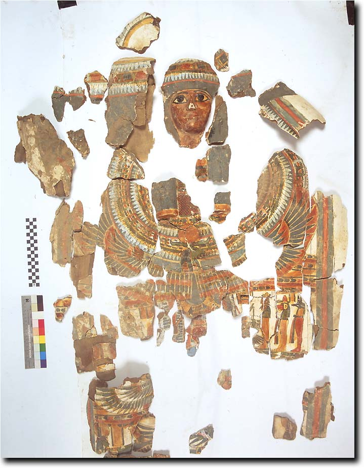

Re-use of TT99 in the 22nd-23rd dynasties
All the evidence from this period comes from painstaking piecing together of archaeological material. Several mummy cases and coffins from the 22nd or 23rd dynasties have been identified., belonging to at least one family. This was discussed in the report on the 2000 season, from which the following is taken.
The inscriptions indicate that at least three of the owners were members of one family. The father, the it-nTr mry-nTr Djedhoriuefankh, was buried in a case of fine quality. The style of the painting on the case indicates that the burial dated to the early 22nd dynasty (c. 900 BC ). The inscriptions included three generations of the paternal ancestry of Djedhoriuefankh, showing that his father and grandfather were named Djedkhonsuiuefankh and Nespaperennub, respectively. Traces of a further name indicate that the great-grandfather may have been a man named Hor... Two other mummy-cases are identified by their texts as belonging to two children of Djedhoriuefankh. One is that of a woman named Tabakmut (shown below), the other of indeterminate identity. In addition to these cases, which it was possible to reconstruct almost in their entirety, there were fragments of two other cases of which substantial pieces survived. One of these belonged to a woman named Tayuheret. The shafts also yielded the remains of at least four other cartonnages, whose owners could not be identified.

© Nigel Strudwick 1997-2016